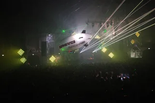
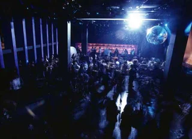

I Like to Smoke in Silence After Raves
I spent about four months choosing and rearranging these 30 tracks until the mix felt right.
Streaming is useful for discovery. If you want to support my work directly, buying a track on Bandcamp makes the biggest difference.
Visit my Bandcamp ↗Club music, experimental electronic, breaks, grime and techno connected into long-form sets without genre borders.
I spent about four months choosing and rearranging these 30 tracks until the mix felt right.
A loud and restless mix about going out again even when you know better.
Breakbeat, bass, garage, jungle and experimental electronic tracks, built from scratch in a DAW. I do not use generative AI in music.
Breakbeat, garage, jungle, techno and melancholic electronic music.
Sketches and original productions from my SoundCloud.
Breaks, UK garage, jungle, ambient and leftfield club music I return to and build from.
Long-form articles about the sounds, scenes, technology and communities behind underground club culture.

Festivals~6 min readFounded in Amsterdam in 1997, techno-only ever since: where Awakenings' summer festival and its Amsterdam Dance Event special happen, and why it's called Awakenings.
Read article →
Rave spots~7 min readLux Frágil has anchored Lisbon since 1998, Ministerium runs Afro-house from a former ministry, and Musicbox closed in 2025: the best clubs in Lisbon now.
Read article → Rave spots~6 min read
Rave spots~6 min readMotion lost its lease in 2025 and moved, Lakota has run drum and bass since the 1990s, and a 1959 cargo ship still hosts club nights: the best clubs in Bristol.
Read article → Rave spots~6 min read
Rave spots~6 min readThe Haçienda closed in 1997, but its warehouse-first DIY streak still shapes the city: the best clubs in Manchester now, and the Warehouse Project's rise since.
Read article → Rave spots~6 min read
Rave spots~6 min readCross Club's salvaged machinery, Karlovy Lázně's five floors and Ankali's techno nights: the best clubs in Prague, mainstream and underground.
Read article → Rave spots~6 min read
Rave spots~6 min readA38's converted cargo ship, the seven rooms of Instant-Fogas and Turbina's techno nights: the best clubs in Budapest now, and the ruin bars several grew out of.
Read article → Rave spots~7 min read
Rave spots~7 min readWOMB, Contact, Vent and Circus Tokyo: the best clubs in Tokyo for house, techno and bass music, and the 68-year law against dancing that shaped them.
Read article → Rave spots~11 min read
Rave spots~11 min readNowadays, Basement, Public Records, Good Room and Elsewhere: the best clubs in NYC for house and techno now, and the history from the Loft to Output.
Read article →My taste comes from Eastern European melancholy, German electronic music and the restless energy of UK bass, from jungle and drum and bass to garage and hardcore. I started with Eurodance as a kid, then got obsessed with The Prodigy, Fatboy Slim, The Chemical Brothers, Underworld, The Future Sound of London and Meat Beat Manifesto, alongside West Coast rap. Jungle and drum and bass led me to Goldie, LTJ Bukem, Photek, Source Direct and 4hero, while Sade, Seal and Sting taught me that melody and atmosphere matter as much as drums.
My tracks and DJ sets move through breakbeat, bass, club music, experimental electronic, breaks and rave, with elements of grime and techno. I do not stay inside one genre, and I am always looking for connections between rhythms, scenes and eras.
I make music for pre-parties, clubs, raves and afters, but also for walking alone or sitting on a balcony with a cigarette and thinking about life.